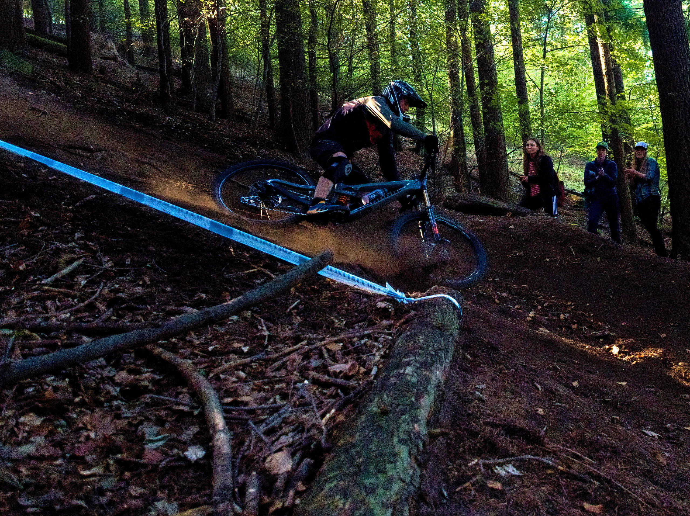
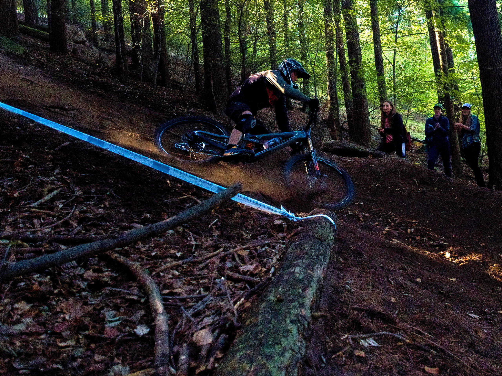

Výsledok
Čas: 0:25:13.8
Top časy: 0:18:18.6 (RACE)
0:19:41.3 (HOBBY)
88. miesto zo 129 v kategórii HOBBY
RS1/TBK3: 07:03.4 (75.)
RS2/TBK1: 02:08.1 (73.)
RS3/TBK2: 03:58.2 (89.)
RS4/Slalomka: 03:43.1 (87.)
RS5: 04:44.6 (100.)
RS6/Baník: 03:36.2 (95.)
16.10.2022 - Preteky sa išli v ideálnom počasí. Deň pre pretekmi pršalo a tak bol podklad pevný, ale stále nepremočený. Všetky RS okrem RS5 boli známe 'firmy' a tak to malo byť bez prekvapení, ale to by bolo príliš ľahké. Samotné trate neboli neprekonateľné, ale vyžadovali si kondičku a to bolo problémom. Technicky náročné pasáže sa nachádzali až na konci jednotlivých RS (Slalomka - záverečný DH úsek, TBK2 rock garden na záver, Baník - skala pred prechodom cez cestu) a na ich úspešné prekonanie je potrebné mať dosť síl.
RS1 (TBK3) a RS2 (TBK1) nepriniesli žiadne prekvapenia. S lepšou technikou prejazdu trate - najmä klopiek - by bol čas podstatne lepší. Výšľap po zvážnici v dvoch tretinách trate je extra dlhý a vyžaduje oveľa lepšiu kondičku pre šprint do kopca. Záverečné switchbacky nerobili problém, tam som už dokonca dobehol troch pomalších jazdcov, ale spomalenie bolo max 5sec.
Na RS3 (TBK2) je potrebné zvládnuť záverečný rock garden v závodnom tempe. Nepodarený prejazd úvodným veľkým kameňom ma komplet vyhodil z rytmu a záverečné metre som sa už len modlil aby bol koniec RS.
RS4 (Slalomka) bola podobná ako RS3. Neistota v klopkách ale v zásade dobrá jazda. Škoda zdokumentovaného pádu, ktorý je v galérii. Ten prišiel po troch dropoch v skratke v záverečnej DH sekcii keď už malo byť vymaľované a zbytočne ma ešte viac zneistil v závere RS.
RS5 bola komplet nová trať vyhrabaná popri TBK3. Zaujímavá trať v mojej 'obľúbenej' hrabanke s rock garden sekciou, kde to bez schopnosti hodiť zadné koleso do nového smeru nestojí za veľa (dotrénovať!!!).
RS6 (Baník) je klasika začínajúca hrabankou a nespevnenými zákrutami v lese, pokračujúca cez skalnatú sekciu s mohutnou skalou pred prechodom cez cestu a končiaca nádherným zic-zac zjazdom okolo potoka. Na skratku cez skalu na záver skalnatej sekcie som si to netrúfol a toto sa mi vypomstilo pri pošmyknutí sa pri jej obchádzke.
Porovnanie s 2021
| 2021 | 2022
--------------- ---------------------
Čas: | 26:20.2 | 25:13.8
| |
TBK1: | 02:11.1 | 02:08.1
TBK2: | 04:19.3 | 03:58.2
TBK3: | 07:25.4 | 07:03.4
Slalomka DH: | 04:00.6 | 03:43.1
Baník: | 04:04.1 | 03:36.2
Galéria
 
